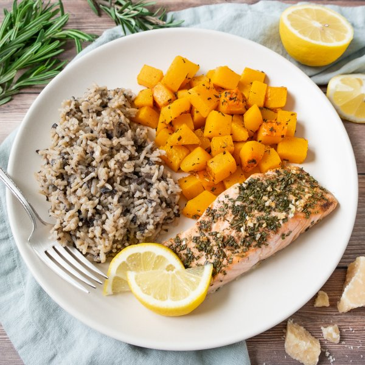

Rosemary Salmon, Butternut Squash & Creamy Portobello Mushroom Rice

Prep Time
40 min
Nutrition (per serving)
700 kcalCalories
50.2 gProtein
72.6 gCarbs
24.3 gFat
Full nutrition table
| Calories | 700 kcal |
| Total fat | 24.3 g |
| Saturated fat | 5.3 g |
| Trans fat | 0.1 g |
| Cholesterol | 81.4 mg |
| Sodium | 156.2 mg |
| Carbohydrates | 72.6 g |
| Fiber | 9.9 g |
| Sugars | 8.7 g |
| Protein | 50.2 g |
| Potassium | 1872.5 mg |
| Calcium | 207.8 mg |
| Iron | 5.6 mg |
| Vitamin A | 315.2 IU |
| Vitamin C | 45.1 mg |
| Vitamin D | 619.6 IU |
Cookware
Ingredients
- 1 cupbasmati rice
- 2 smallbutternut squash
- 24 fl ozchicken or vegetable broth
- ½ small pkgfresh rosemary
- 4 clovesgarlic
- 1lemon
- 1 ozParmesan cheese
- 2 capsportobello mushrooms
- 1 ½ lbsalmon fillet
- 2shallots
- balsamic vinegar
- black pepper
- extra virgin olive oil
- salt
Steps
- Preheat oven to 400°F.
- Wash and dry the fresh produce.½ small pkg fresh rosemary
2 small butternut squash
2 caps portobello mushrooms
1 lemon - Slide rosemary leaves off the stems; discard the stems and mince the leaves. Place in a small bowl.
- Peel and mince garlic. Add to the bowl with the rosemary along with oil, vinegar, salt, and pepper; stir to combine the marinade.2 cloves garlic
2 tbsp extra virgin olive oil
2 tbsp balsamic vinegar
1 tsp salt
½ tsp black pepper - Trim and peel each squash. Halve lengthwise, scrape out seeds, and cut into 1-inch cubes; transfer to a large baking sheet pan. Spoon half of the marinade over the squash (reserving the rest for the salmon), toss to coat, and spread out in an even layer.
- Place baking sheet in the oven (it doesn't have to be fully heated) and roast, stirring halfway through, until squash is golden and fork-tender, about 25 minutes. Remove from oven.
- Meanwhile, peel and mince shallots and additional garlic; place in another small bowl.2 shallots
2 cloves garlic - Using a box grater, coarsely grate the mushrooms; add to the bowl with the shallot and garlic. (Alternatively, you can mince the mushrooms.)
- Preheat a medium saucepan over medium-high heat.
- While the pan heats up, using a strainer or colander, rinse the rice under cold, running water, then set aside to drain.1 cup basmati rice
- Once the pan is hot, add oil and swirl to coat the bottom. Add shallot, garlic, mushroom, salt, and pepper; cook, stirring occasionally, until starting to soften, 3-4 minutes.2 tsp extra virgin olive oil
½ tsp salt
¼ tsp black pepper - Add rice and broth to the pan, stir to combine, and bring to a boil over high heat. Once the broth comes to a boil, cover the pan and reduce heat to low. Cook mushroom-rice until liquid is mostly absorbed, 15-18 minutes. Once done, remove from the heat and let it stand, still covered, for 5 minutes.24 fl oz (3 cups) chicken or vegetable broth
- Meanwhile, coat another baking sheet with a thin layer of oil. Pat salmon dry with paper towels and place, skin-side down, on the baking sheet; drizzle with remaining marinade. Add salmon to the oven and roast until flakey and cooked through, about 12 minutes. Remove from oven.1 tsp extra virgin olive oil
1 ½ lb salmon fillet - While the salmon is roasting, cut lemon into wedges and set aside for serving.
- Finely grate Parmesan. When the mushroom-rice is done, add Parmesan to the pan and stir until creamy and combined.1 oz Parmesan cheese
- Divide squash, creamy mushroom-rice, and salmon between plates; serve with lemon wedges for squeezing. Enjoy!